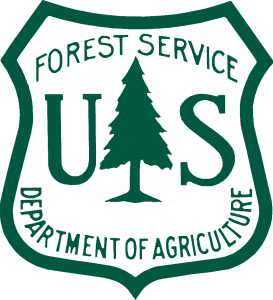

By Andrew Battista and Stephen Balogh
Recently, we experienced another panic over the ideological attack on scientific data. Rumors circulated that the EPA website, including all of the data it hosts, would be taken down. This appears to be just a rumor, for now. The current presidential administration notwithstanding, efforts to rescue data underscores what many people in the library community have known all along: even if federal data won’t abscond into thin air, much of it is poorly organized, partially documented, and effectively undiscoverable. Libraries can improve access to government data and should develop workflows for preserving federal data to make it more accessible.
Data rescue efforts began in January 2017, and over the past few months many institutions hosted hack-a-thon style events to scrape data and develop strategies for preservation. The Environmental Data & Governance Initiative (EDGI) developed a data rescue toolkit, which apportioned the challenge of saving data by distinct federal agency. The efforts of Data Refuge, a group based at Penn seeking to establish best practices for data rescue and preservation, have been written about in a number of places, including this blog.
We’ve had a number of conversations at NYU and with other members of the library community about the implications of preserving federal data and providing access to it. The efforts, while important, call attention to a problem of organization that is very large in scope and likely cannot be solved in full by libraries.
Thus far, the divide-and-conquer model has postulated that individual institutions can “claim” a specific federal agency, do a deep dive to root around its websites, download data, and then mark the agency off a list as “preserved.” The process raises many questions, for libraries and for the data refuge movement. What does it mean to “claim” a federal agency? How can one institution reasonably develop a “chain of custody” for an agency’s comprehensive collection of data (and how do we define chain of custody)?
How do we avoid duplicated labor? Overlap is inevitable and isn’t necessarily a bad thing, but given the scope of the challenge, it would be ideal to distribute efforts so as to benefit from the hard work of metadata remediation that all of us will inevitably do.
These questions suggest even more questions about communication. How do we know when a given institution has preserved federal data, and at what point do we feel ready as a community to acknowledge that preservation has sufficiently taken place? Further, do we expect institutions to communicate that a piece of data has been published, and if so, by what means? What does preservation mean, especially in an environment where data is changing frequently, and what is the standard for discovery? Is it sufficient for one person or institution to download a file and save it? And when an institution claims that it has “rescued” data from a government agency, what commitment does it have to keep up with data refreshes on a regular basis?
An example of an attempt to engage with these issues is Stanford University’s recent decision to preserve the Housing and Urban Development spatial datasets, since they were directly attacked by Republican lawmakers. Early in the Spring 2017 semester, Stanford downloaded all of HUD’s spatial data, created metadata records for them, and loaded them into their spatial discovery environment (EarthWorks).

We can see from the timestamp on their metadata record that the files were added on March 24, 2017. Stanford’s collection process is very robust and implies a level of curation and preservation that is impressive. As colleagues, we know that by adding a file, Stanford has committed to preserving it in its institutional repository, presenting original FGDC or ISO 19139 metadata records, and publishing their newly created records to OpenGeoMetadata, a consortium of shared geospatial metadata records. Furthermore, we know that all records are discoverable at the layer level, which suggests a granularity in description and access that often is not present at many other sources, including Data.gov.
However, if I had not had conversations with colleagues who work at Stanford, I wouldn’t have realized they preserved the files at all and likely would’ve tried to make records for NYU’s Spatial Data Repository. Even as they exist, it’s difficult for me to know that these files were in fact saved as part of the Data Refuge effort. Furthermore, Stanford has made no public claim or longterm “chain of custody” agreement for HUD data, simply because no standards for doing so currently exist.
Maybe it wouldn’t be the worst thing for NYU to add these files to our repository, but it seems unnecessary, given the magnitude of federal data to be preserved. However, some redundancy is a part of the goals that Data Refuge imagines:
Data collected as part of the #DataRefuge initiative will be stored in multiple, trusted locations to help ensure continued accessibility. […]DataRefuge acknowledges–and in fact draws attention to–the fact that there are no guarantees of perfectly safe information. But there are ways that we can create safe and trustworthy copies. DataRefuge is thus also a project to develop the best methods, practices, and protocols to do so.
Each institution has specific curatorial needs and responsibilities, which imply choices about providing access to materials in library collections. These practices seldom coalesce with data management and publishing practices from those who work with federal agencies. There has to be some flexibility between community efforts to preserve data, individual institutions and their respective curation practices.
“That’s Where the Librarians Come In”
NYU imagines a model that dovetails with the Data Refuge effort in which individual institutions build upon their own strengths and existing infrastructure. We took as a directive some advice that Kimberly Eke at Penn circulated, including this sample protocol. We quickly began to realize that no approach is perfect, but we wanted to develop a pilot process for collecting data and bringing it into our permanent geospatial data holdings. The remainder of this post is a narrative of that experience in order to demonstrate some of the choices we made, assumptions we started with, and strategies we deployed to preserve federal data. Our goal is to preserve a small subset of data in a way that benefits our users and also meets the standards of the Data Refuge movement.

We began by collecting the entirety of publicly accessible metadata from Data.gov, using the underlying the CKAN data catalog API. This provided us with approximately 150,000 metadata records, stored as individual JSON files. Anyone who has worked with Data.gov metadata knows that it’s messy and inconsistent but is also a good starting place to develop better records. Furthermore, the concept of Data.gov serves as an effective registry or checklist (this global metadata vault could be another starting place); it’s not the only source of government data, nor is it necessarily authoritative. However, it is a good point of departure, a relatively centralized list of items that exist in a form that we can work with.
Since NYU Libraries already has a robust spatial data infrastructure and has established workflows for accessioning GIS data, we began by reducing the set of Data.gov records to those which are likely to represent spatial data. We did this by searching only for files that meet the following conditions:
- Record contains at least one download resource with a ‘format’ field that contains any of {‘shapefile’, ‘geojson’, ‘kml’, ‘kmz’}
- Record contains at least one resource with a ‘url’ field that contains any of {‘shapefile’, ‘geojson’, ‘kml’, [‘original’ followed by ‘.zip’]}
That search generated 6,353 records that are extremely likely to contain geospatial data. From that search we yielded a subset of records and then transformed them into a .CSV:
The next step was to filter down and look for meaningful patterns. We first filtered out all records that were not from federal sources, divided categories into like agencies, and started exploring them. Ultimately, we decided to rescue data from the Department of Agriculture, Forest Service. This agency seems to be a good test case for a number of the challenges that we’ve identified. We isolated 136 records and organized them here (click to view spreadsheet). However, we quickly realized that a sizable chunk of the records had already somehow become inactive or defunct after we had downloaded them (shaded in pink), perhaps because they had been superseded by another record. For example, this record is probably meant to represent the same data as this record. We can’t know for sure, which means we immediately had to decide what to do with potential gaps. We forged ahead with the records that were “live” in Data.gov.
About Metadata Cleaning
There are some limitations to the metadata in Data.gov that required our team to make a series of subjective decisions:
- Not everything in Data.gov points to an actual dataset. Often, records can point to other portals or clearinghouses of data that are not represented within Data.gov. We ultimately decided to omit these records from our data rescue effort, even if they point to a webpage, API, or geoservice that does contain some kind of data.
- The approach to establishing order on Data.gov is inconsistent. Most crucially for us, there is not a one-to-one correlation between a record and an individual layer of geospatial data. This happens frequently on federal sites. For instance, the record for the U.S. Forest Service Aerial Fire Retardant Hydrographic Avoidance Areas: Aquatic actually contains eight distinct shapefile layers that correspond to the different regions of coverage. NYU’s collection practice dictates that each of these layers be represented by a distinct record, but in the Data.gov catalog, they are condensed into a single record.
- Not all data providers publish records for data on Data.gov consistently. Many agencies point to some element of their data that exists, but when you leave the Data.gov catalog environment and go to the source URL listed in the resources section of the record, you’ll find even more data. We had to make decisions about whether or not (and how) we would include this kind of data.
- It’s very common that single Data.gov metadata records remain intact, but the data that they represent changes. The Forest Service is a good example of this, as files are frequently refreshed and maintained within the USDA Forestry geodata clearinghouse. We did not make any effort in either of these cases to track down other sets of data that the Data.gov metadata records gesture toward (at least not at this time).
Relatedly, we did not make attempts to provide original records for different formats of what appeared to be the same data. In the case of the Forest Service, many of the records contained both a shapefile and a geodatabase, as well as other original metadata files. Our general approach was to save the shapefile and publish it in our collection environment, then bundle up all other “data objects” associated with a discrete Data.gov record and include them in the preservation environment of our Spatial Data Repository.
Finally, we realized that the quality of the metadata itself varies widely. We found that it’s a good starting place to creating metadata for discovery, even if we agree that a Data.gov record is an arbitrary way to describe a single piece of data. However, we had to clean the Data.gov records to adhere to the GeoBlacklight standard and our own internal cataloging practices. Here’s a snapshot of the metadata in process.
Sample Record
{
dc_identifier_s: "http://hdl.handle.net/2451/12345",
dc_title_s: "2017 Aerial Fire Retardant Hydrographic Avoidance Areas: Aquatic - Region 1",
dc_description_s: "This polygon layer depicts aerial retardant avoidance areas for hydrographic feature data. Aerial retardant avoidance area for hydrographic feature data are based on high resolution National Hydrographic Dataset (NHD) produced by USGS and available from the USFS Enterprise Data Warehouse. Forests and/or regions have had the opportunity to modify the default NHD water representation (300ft buffer from all water features) for their areas of interest to accurately represent aerial fire retardant avoidance areas as described in the 2011 Record of Decision for the Nationwide Aerial Application of Fire Retardant on National Forest System Land EIS. These changes have been integrated into this dataset depicting aerial fire retardant avoidance areas for hydrographic features.The following process was used to develop the hydrographic areas to be avoided by aerial fire retardant. Using the FCODE attribute, streams/rivers/waterbodies are categorized into perennial and intermittent/ephemeral types. Linear features (streams & rivers) FCODES 46003 and 46006 and polygonal features (lakes and other waterbody) FCODES 39001, 39005, 39006, 43612, 43614, 46601 are considered intermittentt/ephemeral features. All other FCODES are considered to be perennial features. Underground and covered water features (e.g., pipelines) are excluded. Initially, all intermittent/ephemeral and perennial features were buffered by 300 feet by the Forest/Region units. Subsequently, Forest/Region units may have extended these buffers locally based on their requirements. The resulting avoidance areas may have overlapping features due to the buffering processes.The National Hydrography Dataset (NHD) is a feature-based database that interconnects and uniquely identifies the stream segments or reaches that make up the nation's surface water drainage system. NHD data was originally developed at 1:100,000-scale and exists at that scale for the whole country. This high-resolution NHD, generally developed at 1:24,000/1:12,000 scale, adds detail to the original 1:100,000-scale NHD. (Data for Alaska, Puerto Rico and the Virgin Islands was developed at high-resolution, not 1:100,000 scale.) Local resolution NHD is being developed where partners and data exist. The NHD contains reach codes for networked features, flow direction, names, and centerline representations for areal water bodies. Reaches are also defined on waterbodies and the approximate shorelines of the Great Lakes, the Atlantic and Pacific Oceans and the Gulf of Mexico. The NHD also incorporates the National Spatial Data Infrastructure framework criteria established by the Federal Geographic Data Committee.This layer was preserved from the Data.gov catalog as part of the Data Refuge effort (www.datarefuge.org) and is a representation of catalog item 77781e81-17d6-4f91-a2df-7dfc7cb33eef. Some modifications to the metadata have been made. Refer to the checksum manifest for a list of all original data objects associated with this item. Refer to the documentation for original metadata and information on the data.",
dc_rights_s: "Public",
dct_provenance_s: "NYU",
dct_references_s: "{"http://schema.org/url":"http://hdl.handle.net/2451/12345","http://schema.org/downloadUrl":"https://archive.nyu.edu/bitstream/2451/12345/2/nyu_2451_12345.zip","http://www.opengis.net/def/serviceType/ogc/wfs":"https://maps-public.geo.nyu.edu/geoserver/sdr/wfs","http://www.opengis.net/def/serviceType/ogc/wms":"https://maps-public.geo.nyu.edu/geoserver/sdr/wms"}",
layer_id_s: "sdr:nyu_2451_12345",
layer_slug_s: "nyu_2451_12345",
layer_geom_type_s: "Polygon",
layer_modified_dt: "2017-5-2T19:45:8Z",
dc_format_s: "Shapefile",
dc_language_s: "English",
dc_type_s: "Dataset",
dc_publisher_s: [
"United States. Department of Agriculture"
],
dc_creator_sm: [ ],
dc_subject_sm: [
"Forest management",
"Hydrography",
"Fire prevention",
"Emergency management"
],
dct_isPartOf_sm: "Data.gov Rescue",
dct_issued_s: "04-01-2017",
dct_temporal_sm: [
"2017"
],
dct_spatial_sm: [
"United States of America"
],
dc_relation_sm: [
"http://sws.geonames.org/6252001/about/rdf"
],
solr_geom: "ENVELOPE(-170.1769013405, -64.5665435791, 71.6032483233, 24.7073204053)",
solr_year_i: 2017,
geoblacklight_version: "1.0"
}
Some of the revisions to the metadata are small and reflect choices that we make at NYU (these are highlighted in red). For instance, the titles were changed to reflect a date-title-area convention that we already use. Other fields (like Publisher) are authority controlled and were easy to change, while others, like format and provenance, were easy to add. For those unfamiliar with the GeoBlacklight standard, refer to the project schema pages and related documentation. Many of the metadata enhancements are system requirements for items to be discovered within our Spatial Data Repository. Subjects presented more of a problem, as these are drawn from an informal tagging system on Data.gov. We used an elaborate process of finding and replacing to remediate these subjects into the LCSH Authority, which connects the items we collect into our larger library discovery environment.
The most significant changes are in the descriptions. We preserved the essence of the original Data.gov description, yet we cleaned up the prose a little bit and added a way to trace the item that we are preserving back to its original representation in Data.gov. In the case of aforementioned instances, in which a single Data.gov record contains more than one shapefile, we generated an entirely new record and referenced it to the original Data.gov UUID. For example:
Sample Record
{
dc_identifier_s: "http://hdl.handle.net/2451/12346",
dc_title_s: "2017 Aerial Fire Retardant Hydrographic Avoidance Areas: Aquatic - Region 2",
dc_description_s: "This polygon layer depicts aerial retardant avoidance areas for hydrographic feature data. Aerial retardant avoidance area for hydrographic feature data are based on high resolution National Hydrographic Dataset (NHD) produced by USGS and available from the USFS Enterprise Data Warehouse. Forests and/or regions have had the opportunity to modify the default NHD water representation (300ft buffer from all water features) for their areas of interest to accurately represent aerial fire retardant avoidance areas as described in the 2011 Record of Decision for the Nationwide Aerial Application of Fire Retardant on National Forest System Land EIS. These changes have been integrated into this dataset depicting aerial fire retardant avoidance areas for hydrographic features.The following process was used to develop the hydrographic areas to be avoided by aerial fire retardant. Using the FCODE attribute, streams/rivers/waterbodies are categorized into perennial and intermittent/ephemeral types. Linear features (streams & rivers) FCODES 46003 and 46006 and polygonal features (lakes and other waterbody) FCODES 39001, 39005, 39006, 43612, 43614, 46601 are considered intermittentt/ephemeral features. All other FCODES are considered to be perennial features. Underground and covered water features (e.g., pipelines) are excluded. Initially, all intermittent/ephemeral and perennial features were buffered by 300 feet by the Forest/Region units. Subsequently, Forest/Region units may have extended these buffers locally based on their requirements. The resulting avoidance areas may have overlapping features due to the buffering processes.The National Hydrography Dataset (NHD) is a feature-based database that interconnects and uniquely identifies the stream segments or reaches that make up the nation's surface water drainage system. NHD data was originally developed at 1:100,000-scale and exists at that scale for the whole country. This high-resolution NHD, generally developed at 1:24,000/1:12,000 scale, adds detail to the original 1:100,000-scale NHD. (Data for Alaska, Puerto Rico and the Virgin Islands was developed at high-resolution, not 1:100,000 scale.) Local resolution NHD is being developed where partners and data exist. The NHD contains reach codes for networked features, flow direction, names, and centerline representations for areal water bodies. Reaches are also defined on waterbodies and the approximate shorelines of the Great Lakes, the Atlantic and Pacific Oceans and the Gulf of Mexico. The NHD also incorporates the National Spatial Data Infrastructure framework criteria established by the Federal Geographic Data Committee.This layer does not have a discrete representation in Data.gov; rather, it is a data object represented on the record 77781e81-17d6-4f91-a2df-7dfc7cb33eef. Some modifications to the metadata have been made. Refer to the checksum manifest for a list of all original data objects associated with this item. Refer to the documentation for original metadata and information on the data.",
dc_rights_s: "Public",
dct_provenance_s: "NYU",
dct_references_s: "{"http://schema.org/url":"http://hdl.handle.net/2451/12345","http://schema.org/downloadUrl":"https://archive.nyu.edu/bitstream/2451/12345/2/nyu_2451_12345.zip","http://www.opengis.net/def/serviceType/ogc/wfs":"https://maps-public.geo.nyu.edu/geoserver/sdr/wfs","http://www.opengis.net/def/serviceType/ogc/wms":"https://maps-public.geo.nyu.edu/geoserver/sdr/wms"}",
layer_id_s: "sdr:nyu_2451_12345",
layer_slug_s: "nyu_2451_12345",
layer_geom_type_s: "Polygon",
layer_modified_dt: "2017-5-2T19:45:8Z",
dc_format_s: "Shapefile",
dc_language_s: "English",
dc_type_s: "Dataset",
dc_publisher_s: [
"United States. Department of Agriculture"
],
dc_creator_sm: [ ],
dc_subject_sm: [
"Forest management",
"Hydrography",
"Fire prevention",
"Emergency management"
],
dct_isPartOf_sm: "Data.gov Rescue",
dct_issued_s: "04-01-2017",
dct_temporal_sm: [
"2017"
],
dct_spatial_sm: [
"United States of America"
],
dc_relation_sm: [
"http://sws.geonames.org/6252001/about/rdf"
],
solr_geom: "ENVELOPE(-170.1769013405, -64.5665435791, 71.6032483233, 24.7073204053)",
solr_year_i: 2017,
geoblacklight_version: "1.0"
}
Adding these descriptions into the metadata field not only identifies our work with the data refuge movement, but also it allows for anyone who discovers this data to track back to its presentation in an original context. Still it’s important to emphasize that this process inevitably means that not all data associated with the Forest Service has been rescued by NYU.
In all, by narrowing down to one agency and then doing a search that is likely to yield spatial data only, we ended up identifying 71 records of interest but ultimately publishing 90 individual records to represent this data (see our final spreadsheet). Note that we are still in the process of importing these records into our discovery environment.
Future Directions: Publishing Checksums
Libraries’ ability to represent precisely and accurately which datasets, or components of datasets, have been preserved is a serious impediment to embarking on a distributed repository / data-rescue project. Further, libraries need to know if data objects have been preserved and where they reside. To return to the earlier example, how is New York University to know that a particular government dataset has already been “rescued” and is being preserved (either via a publicly-accessible repository interface, or not)?
Moreover, even if there is a venue for institutions to discuss which government datasets fall within their collection priorities (e.g. “New York University cares about federal forestry data, and therefore will be responsible for the stewardship of that data”), it’s not clear that there is a good strategy for representing the myriad ways in which the data might exist in its “rescued” form. Perhaps the institution that elects to preserve a dataset wants to make a few curatorial decisions in order to better contextualize the data with the rest of the institution’s offerings (as we did with the Forest Service data). These types of decisions are not abnormal in the context of library accessioning.
The problem comes when data processing practices of an institution, which are often idiosyncratic and filled with “local” decisions to a certain degree, start to inhibit the ability for individuals to identify a copy of a dataset in the capacity of a copy. There is a potential tension between preservation –– preserving the original file structure, naming conventions, and even level of dissemination of government data products –– and discovery, where libraries often make decisions about the most useful way for users to find relevant data that are in conflict with the decisions exhibited in the source files.
For the purposes of mitigating the problem sketched above, we propose a data store that can be drawn upon by all members of the library / data-rescue community, whereby the arbitrary or locally-specific mappings and organizational decisions can be related back to original checksums of individual, atomic, files. File checksums would be unique identifiers in such a datastore, and given a checksum, this service would display “claims” about institutions that hold the corresponding file, and the context in which that file is accessible.
Consider this as an example:
- New York University, as part of an intentional data rescue effort, decides to focus on collecting and preserving data from the U.S. Forest Service.
- The documents and data from Forest Service are accessible through many venues:
- They (or some subset) are linked to from a Data.gov record
- They (or some subset) are linked to directly from the FSGeodata Clearinghouse
- They are available directly from a geoservices or FTP endpoint maintained by the Forest Service (such as here).
- NYU wants a way to grab all of the documents from the Forest Service that it is aware of and make those documents available in an online repository. The question is, if NYU has made organizational and curatorial decisions about the presentation of documents rescued, how can it be represented (to others) that the files in the repository are indeed preserved copies of other datasets? If, for instance, Purdue University comes along and wants to verify that everything on the Forest Service’s site is preserved somewhere, it now becomes more difficult to do so, particularly since those documents never possessed a canonical or authoritative ID in the first place, and even could have been downloaded originally from various source URLs.
Imagine instead that as NYU accessions documents ––restructuring them and adding metadata –– they not only create checksum manifests (similar to, if not even identical to the ones created by default by BagIt), but also deposit those manifests to a centralized data store in such a form that the data store could now relate essential information:
The file with checksum 8a53c3c191cd27e3472b3e717e3c2d7d979084b74ace0d1e86042b11b56f2797 appears in as a component of the document instituton_a_9876... held by New York University.
Assuming all checksums are computed at the lowest possible level on files rescued from Federal agencies (i.e., always unzip archives, or otherwise get to an atomic file before computing a checksum), such a service could use archival manifest data as a way to signal to other institutions if a file has been preserved, regardless of whether or not it exists as a smaller component of a different intellectual entity –– and it could even communicate additional data about where to find these preserved copies. In the example of the dataset mentioned above, the original Data.gov record represents 8 distinct resources, including a Shapefile, a geodatabase, an XML metadata document, an HTML file that links to an API, and more. For the sake of preservation, we could package all of these items, generate checksums for each, and then take a further step in contributing our manifest to this hypothetical datastore. Then, as other institutions look to save other data objects, they could search against this datastore and find not merely checksums of items at the package level, but actually at the package component level, allowing them to evaluate which portion or percentage of data has been preserved.
A system such as the one sketched above could efficiently communicate preservation priorities to a community of practice, and even find use for more general collection-development priorities of a library. Other work in this field, particularly that regarding IPFS, could tie in nicely –– but unlike IPFS, this would provide a way to identify content that exists within file archives, and would not necessitate any new infrastructure for hosting material. All it would require is for an institution to contribute checksum manifests and a small amount of accompanying metadata to a central datastore.
Principles
Even though our rescue of the Forest Service data is still in process, we have learned a lot about the challenges associated with this project. We’re very interested in learning about how other institutions are handling the process of rescuing federal data and look forward to more discussions at the event in Washington D.C. on May 8.

{kind=link}